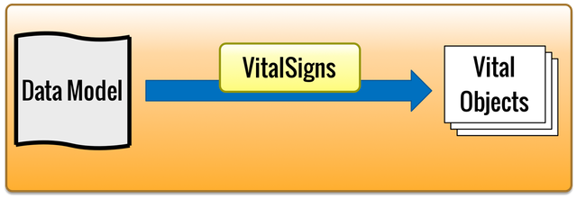

VitalSigns

VitalSigns provides development tools to define a data model across the
entire application and generate objects, which are then used in various
components, including the Application's User Interface, Vital Flows, and
Hadoop.
This means that the definition of the "User" object is the same in the
Application's User Interface, in Vital Flows for recommendations, and in
the Hadoop machine learning jobs. This speeds development and eliminates
many problems with data incompatibilities.
VitalSigns handles data mapping across components, across different
programming languages and data repositories.